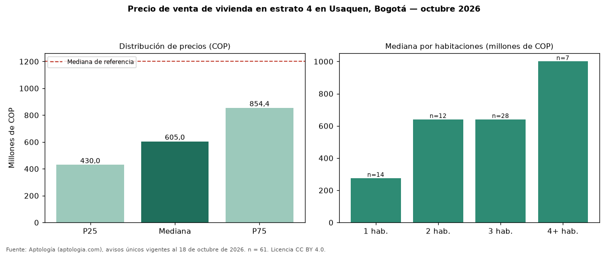

Precio de venta de vivienda en estrato 4 en Usaquen, Bogotá — octubre 2026
Con 61 avisos únicos, el precio mediano de vivienda en estrato 4 en venta en Usaquen, Bogotá es COP 605 millones. Eso es 50 % menos que la mediana de toda la oferta de venta en Usaquen (COP 1,20 mil millones). Por metro cuadrado, la mediana es COP 7.407.468/m² (−10 % frente a COP 8.272.251/m²). Por habitaciones: 1 habitación, COP 275 millones (n = 14); 2 habitaciones, COP 640 millones (n = 12); 3 habitaciones, COP 640 millones (n = 28); 4 o más habitaciones, COP 1,00 mil millones (n = 7). El rango intercuartílico va de COP 430 millones a COP 854 millones (razón 2,0). El área mediana es 81 m² (referencia: 158 m²). La antigüedad mediana declarada es de 5 años. Datos abiertos CC BY 4.0 de Aptología; fuente y búsqueda de inmuebles: https://www.aptologia.com/estrato-de/bogota/usaquen. Archivos: PDF de 2 páginas, CSV con las cifras y gráfica PNG.

| Avisos únicos | 61 |
|---|---|
| Percentil 25 | COP 430.000.000 |
| Mediana | COP 605.000.000 |
| Percentil 75 | COP 854.370.000 |
| Mediana por m² | COP 7.407.467 |
Fuente: avisos vigentes de portales inmobiliarios recopilados por Aptología, deduplicados (mínimo 30 avisos únicos por celda). Precios pedidos, no cerrados. Fecha: 2026-10-18.